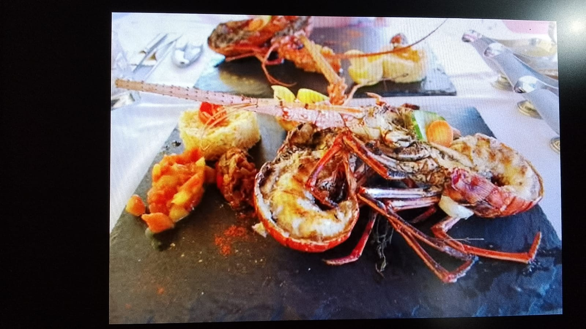
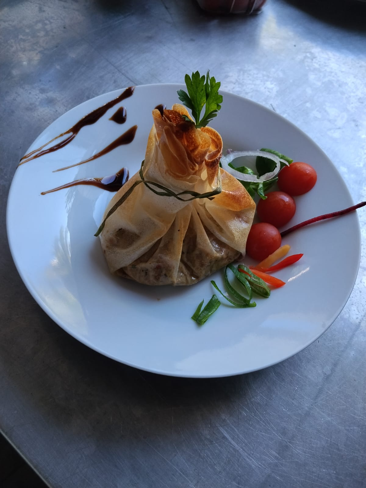
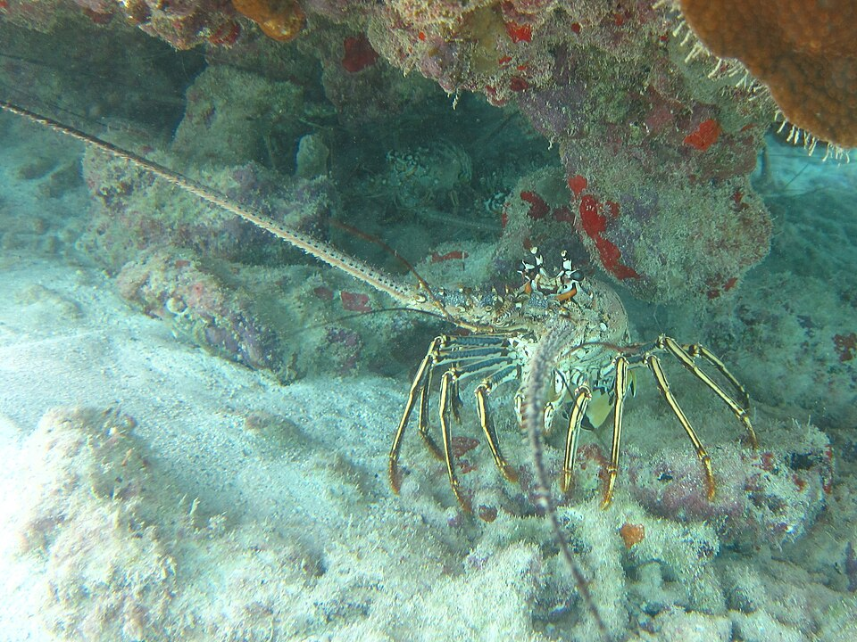

Langouste cuite
Cuisson issue du vivier selon le producteur. Fiche technique, refroidissement et durée de conservation à qualifier.
KopéAgri × Langouste House : étudier une filière de langoustes cuites, précuites ou vivantes sous conditions, avec commande B2B, traçabilité et chaîne logistique maîtrisée.
Devenir partenaireDemander un devisProjet en qualification : pas d'expédition ni de disponibilité garantie à ce stade.

Photo issue du dépôt KopéAgri — à confirmer comme visuel contractuel par Charles.
Charles indique que ses langoustes sont cuites à partir d'un vivier. La langouste cuite est notre produit prioritaire pour l'étude de commercialisation. Les prix, quantités, calibres et agréments restent à confirmer.
Cuisson issue du vivier selon le producteur. Fiche technique, refroidissement et durée de conservation à qualifier.

À étudierProcédé de préparation, conditionnement et instructions client à établir avant commercialisation.

Sous conditionsRégime sanitaire et technique spécifique pour chaque flux, après validation.
Créer un compte, décrire l'activité, compléter SIRET et justificatifs pertinents, transmettre le dossier.
Ouvrir l'espace inscriptionAjouter photos, produit, unité, quantité, prix HT, TVA, origine, conservation et disponibilités.
Voir KopéAgriIndiquer adresse, créneaux d'enlèvement, destinations et transport adapté avant devis et réservation.
Demande d'approvisionnementRefroidissement et maintien en température selon procédure sanitaire validée, durée de vie étudiée.
Kit isotherme validé ; glace carbonique uniquement si applicable et acceptée par le transporteur.
Emballage et paramètres de maintien en vie spécialisés. Ne pas utiliser de carboglace par défaut.
Cette liste est une piste de prospection, sans engagement, disponibilité ni tarif confirmé.
| Besoin | Prestataires potentiels | Vérification indispensable |
|---|---|---|
| Transit et douane | SIFA • GEODIS • TTOM • SODETRAM • Somotrans | Flux crustacés, destination, formalités, frais |
| Fret aérien | Air France KLM Martinair Cargo | Acceptation périssable, route, délais et froid |
| Fret maritime | Marfret | Frigorifique, transit, volumes et conditionnement |
| Caisses isothermes | Gerembal • Levert • Martinique Hygiène Emballage | Contact alimentaire, dimensionnement, test thermique |
| Glace carbonique | GAZ DOM | Approvisionnement, quantité, UN1845 et acceptation fret |
Vérifier auprès de la DAAF le régime d'agrément ou de dérogation selon transformation et acheteur.
Information agrément sanitaireQualifier destination, origine, classification, déclarations et obligations de l'importateur.
Douane françaiseFiche produit, étiquetage, colisage, température mesurée, assurance et acceptation écrite.
Photos : dépôt GitHub CVlad97/kopeagri-caraibes, public/visuals. Contrôle public des fournisseurs et règles applicables à effectuer avant engagement.